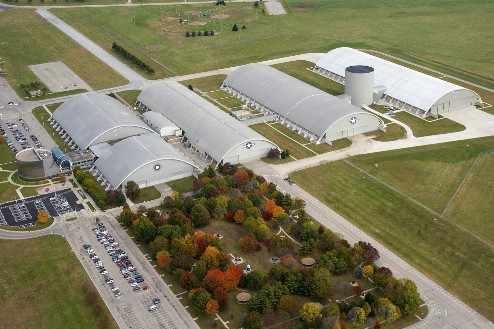

Flite Fest Recap 2024
What the event actually feels like, from Flite Test themselves.イベントのふんいきがわかります。
MISSION BRIEF FOR LANCE · PREPARED BY YUUKI · 31 JUL 2026
National Museum of the U.S. Air Force · Dayton, Ohio
06–09 AUG 2026 · WRIGHT-PATTERSON AFB · 39.78°N 84.11°W
UNTIL THE GATES OPEN
01 · WHY THIS YEAR
Flite Fest normally happens in a field. This year Flite Test moved the entire event onto Wright-Patterson Air Force Base, at the world's largest military aviation museum — the biggest collaboration in Flite Test history. You will be flying foam board airplanes in the same place they parked the SR-71. Flite Fest は、いつもは広い原っぱでやります。でも今年は、空軍の基地でやります。ここには世界で一番大きい飛行機の博物館があります。すごいことです。
Running alongside it, 2–9 August, is the DARPA Lift Challenge — a $6.5 million heavy-lift drone competition. So in one week you get both ends of the hobby: a $12 hot-glued trainer, and machines built by engineering teams chasing six and a half million dollars. Same field. Same air. おなじ週に、ドローンの大会もあります。賞金は650万ドルです。安い飛行機と、とても高い機械が、同じ空を飛びます。

02 · WEATHER — LIVE
For RC flying, wind matters more than rain. Under 10 mph is comfortable, 10–15 mph is workable for a heavier plane, and above 15 mph a foam board trainer becomes a kite you do not control. These numbers are live for Dayton, Ohio. RC飛行機は、雨より風が大事です。10マイルより下なら、とてもいいです。15マイルより上は、難しいです。
LOADING FORECAST…
Live data from Open-Meteo. Wind is the daily maximum, so mornings are usually calmer than this number. 風の数字は、その日で一番強い風です。朝は、もっと静かです。
03 · WHY THIS IS ALREADY YOUR HOBBY
Last lesson you told me you took a $10,000 car and finished it for $1,000 in two weeks — and that the truck is at 70% with about a month to go. That instinct — cheap materials, your own hands, refusing to buy the finished thing — is exactly what the whole Flite Test culture is built on. この前のレッスンで、あなたは言いました。「1万ドルの車を、1000ドルで直しました。2しゅうかんかかりました」。安いざいりょうで、自分の手で作る。Flite Test も、まったく同じ考えです。
A $10,000 car, fixed for $1,0001万ドルの車を1000ドルで
Two weeks. One expensive part. And at the end it is genuinely your car, in a way a bought one never is.2しゅうかん。高い部品は1つだけ。そして、それは「自分の車」になります。
A flying airplane, from a flat sheet1枚の板から、飛ぶ飛行機
Foam board, hot glue, a knife. Build it in an afternoon, crash it, glue it, fly it again before dinner.はっぽうスチロールと、のりと、ナイフ。午後に作って、落ちて、直して、夜ごはんの前にまた飛ばします。
Two things to chase while you are there, given what you have been into lately: the 3D-printed parts people bring to the build tents (motor mounts, custom hardware — the same modeling you wanted to try), and the DARPA drone teams. You have been building with Claude Code and thinking about making your own game; that is the same muscle those teams use, just aimed at something that has to leave the ground. あなたは今、3Dプリンターと、AIでゲームを作ることに興味がありますね。会場には、3Dプリンターで部品を作る人がたくさんいます。ぜひ見てください。
04 · WATCH BEFORE YOU GO
Watch these and you will walk in already knowing what you are looking at. The last one is a 360° video — drag inside the frame to look around the cockpit. これを見ておくと、当日もっと楽しくなります。最後の動画は360度です。画面を指で動かせます。
What the event actually feels like, from Flite Test themselves.イベントのふんいきがわかります。
The museum's own feature on the aircraft you will meet in FIND 02.博物館の公式動画です。
Sit in the cockpit before you stand next to the real one.SR-71の中を360度見られます。
05 · LEARN THIS BEFORE YOU GO
None of this is difficult. It is the stuff people wish they had known on the drive in. むずかしくありません。知っていると、当日らくです。
Early Years, WWII, Korea & Southeast Asia, Cold War, Missiles, R&D, Space, Global Reach and Presidential. Decide before you walk in which two you actually want, or you will spend the day in building one.全部は見られません。先に「どこを見るか」を決めてください。
Charging stations at any RC event are always crowded. Arrive with everything full, and bring a LiPo-safe bag. Heat plus a hot car is the classic Flite Fest mistake.会場の充電き は、いつもこんでいます。家で充電してください。
Check the current registration and safety rules for recreational RC flight before the event, and follow whatever the field marshals brief on site — their call always wins over anything you read at home.会場の係の人の指示が、いつも一番大事です。
The Wright brothers were bicycle mechanics here who built an airplane in a shop. You are a person who fixes vehicles in a garage. Read one page about them before you go — it lands differently.ライト兄弟は、この町の自転車やさんでした。自分で飛行機を作りました。あなたと似ていますね。
An open flying field has no shade. Sunscreen, a hat, more water than you think, and a chair — because you will end up watching for hours without meaning to.原っぱには、かげがありません。帽子と水をわすれないでください。
Do not try to study a chapter. Learn the six aircraft words in section 07 and the phrases in section 09 — that is a realistic amount to actually use in one day.たくさんおぼえなくていいです。下の言葉だけで十分です。
06 · SUGGESTED SORTIE
It is a straight shot east from Indiana, so you can be there early. Ohio in August is hot, and the museum is air-conditioned and free — which decides most of this plan for you. インディアナから東へ行くだけです。朝早く行けます。8月は暑いので、昼は博物館の中がいいです。
Morning air is smooth and the field is quiet. Wind builds as the ground heats up. Get your best flights in before the day turns bumpy.朝は風が静かです。一番いい時間です。
This is the part you cannot get from a video: people repairing, modifying and arguing about their airplanes. Bring something broken and someone will help you fix it. Your Japanese mission happens here — see section 08.こわれた飛行機を直す人がいます。動画では見られない場所です。
Hottest part of the day, and the museum is open 9–5, free, indoors. Four hangars — realistically you will not finish them, so pick two and do them properly.一番暑い時間です。中はすずしくて、ただです。
Streamer combat is the loudest and funniest thing at any Flite Fest. Watch at least one round even if you are not flying in it.飛行機のバトルは、とてもおもしろいです。絶対見てください。
The air goes glassy again near sunset. Fly one more, then stop and actually look at where you are standing.夕方も風が静かです。もう一回飛ばしましょう。
07 · FIND THESE INSIDE
Each one comes with its Japanese word, with furigana above the kanji so you can read all of it. Say it out loud while standing in front of the real thing. That is how words actually stick. 漢字の上に、ひらがなを書きました。本物の前で、声に出して言ってみてください。
08 · YOUR MISSION AT THE BUILD TENT
Everything below is grammar we practiced on 23 July, pointed at airplanes instead of cars. A build tent is full of people who made something themselves — so every question you already know how to ask works there. Ask one person. That is the whole mission. 下の文は、7月23日のレッスンでれんしゅうしました。車を飛行機に変えるだけです。一人に聞いてみてください。
YOU ASKED ME THIS ABOUT YOUR CAR
どれくらい時間がかかりましたか。
dore kurai jikan ga kakarimashita ka
"How long did it take?" — ask a builder this about their airplane.作った人に、これを聞いてください。
SAME PATTERN, MONEY INSTEAD OF TIME
どれくらい高かったですか。
dore kurai takakatta desu ka
"How expensive was it?" — the answer at Flite Fest is usually delightfully small.「いくらでしたか」の意味です。たぶん安いです。
YOU USED THIS FOR THE TRUCK: "もう70%"
もう70%です。あと1ヶ月くらいです。
mō nanajuppāsento desu. ato ikkagetsu kurai desu
"It's already at 70%. About one more month to go." — works for a truck and a half-built airplane, unchanged.トラックにも、作りかけの飛行機にも使えます。
THE COMPARISON PATTERN, A > B
車より飛行機の方が安いです。
kuruma yori hikōki no hō ga yasui desu
"Airplanes are cheaper than cars." — I suspect you will find this out this week.たぶん、今週わかります。
SAVE THIS ONE FOR OUR NEXT LESSON
一番楽しかったのは何ですか。
ichiban tanoshikatta no wa nan desu ka
"What was the most fun part?" — I am going to ask you exactly this. Start deciding your answer on the drive home.次のレッスンで、私がこれを聞きます。帰りの車で考えてください。
09 · SAY THESE AT THE FIELD
Real Japanese, not textbook Japanese. Try them on your own airplane. Nobody there will understand you, which makes it excellent practice. これは本当の日本語です。教科書の日本語ではありません。
いってきます！
ittekimasu
"Here I go!" — say it right before you launch.飛ばす前に言います。
飛んだ！
tonda
"It flew!"飛んだ時に言います。
落ちた…
ochita
"…it went down." The other half of this hobby.落ちた時に言います。
大丈夫、直せます。
daijōbu, naosemasu
"It's fine, I can fix it." Your entire personality, in three words.あなたにぴったりの文です。
自分で作りました。
jibun de tsukurimashita
"I built it myself." Say this one with your chest out.自慢していい文です。
もう一回！
mō ikkai
"One more time!"もう一度やる時。
かっこいい！
kakkoii
"That is so cool!"一番大事な言葉です。
10 · WHILE YOU ARE IN DAYTON
Dayton is not a stopover town for an aviation person — it is the origin. Everything below is a real, verified place with an address. デイトンは、飛行機が生まれた町です。下は全部本当にある場所です。
Water and sunscreen: Kroger Marketplace, 1161 E Dayton Yellow Springs Rd, Fairborn — about 10 minutes out, open from 6 a.m., with a pharmacy. Buy before you get to the field, not after. 水と日やけ止め：Kroger（車で10分・朝6時から）で先に買ってください。
Parking: free, on site at the museum, and no base pass or ID check is needed to reach the museum itself. 駐車場：ただです。博物館に入るのに、とくべつな許可はいりません。
August in Dayton: average high around 83°F, humid, with afternoon thunderstorms possible. Bring a light rain layer — and remember the hangars are air-conditioned. 8月のデイトン：だいたい83°F（28°C）くらい。むしあついです。午後に雨が降ることがあります。
11 · ONE QUIET STOP
In the WWII gallery you will pass Bockscar — the B-29 that carried out the atomic bombing of Nagasaki — and, in the same building, the Zero. For an American aviation fan those are two exhibits. For a Japanese person they are two different kinds of silence. 戦争のへやに、ボックスカーという飛行機があります。長崎に原爆を落とした飛行機です。同じたてものに、零戦もあります。
I am not telling you this to make your day heavy. I am telling you because you are learning my language, and a language comes attached to a history. Stand there a minute longer than you were going to. That is all. あなたは私の言葉を勉強しています。言葉には、歴史もついてきます。すこしだけ、長く立っていてください。それだけです。
12 · SOMETHING YOU SAID LAST LESSON
"The old circus was bigger — more people, more animals. But now it continues as a culture."「昔のサーカスは大きかった。でも今は、文化として続いている」
You said that about the circus you went to with your parents, and you reached for the word 文化 (bunka — culture) by yourself. It was the best thing you said all lesson. あなたは自分で「文化」という言葉を使いました。あの日で一番よかったです。
Keep it in your pocket this week, because you are about to walk through the exact same shape: one hangar holds the biggest machines a country could possibly build, and outside on the grass, people are making airplanes out of foam board and glue. The huge version is in a museum now. The small hand-built version is still alive — and you will be standing in the middle of it. 今週も同じです。大きい飛行機は、今は博物館にあります。でも外では、人が手で飛行機を作っています。文化は生きています。
13 · YOUR HOMEWORK
Do not write anything down at the event — you talk best from photos, so just collect photos and we will build the whole lesson out of them. 会場では、メモしなくていいです。写真だけ撮ってください。次のレッスンは、その写真で話します。